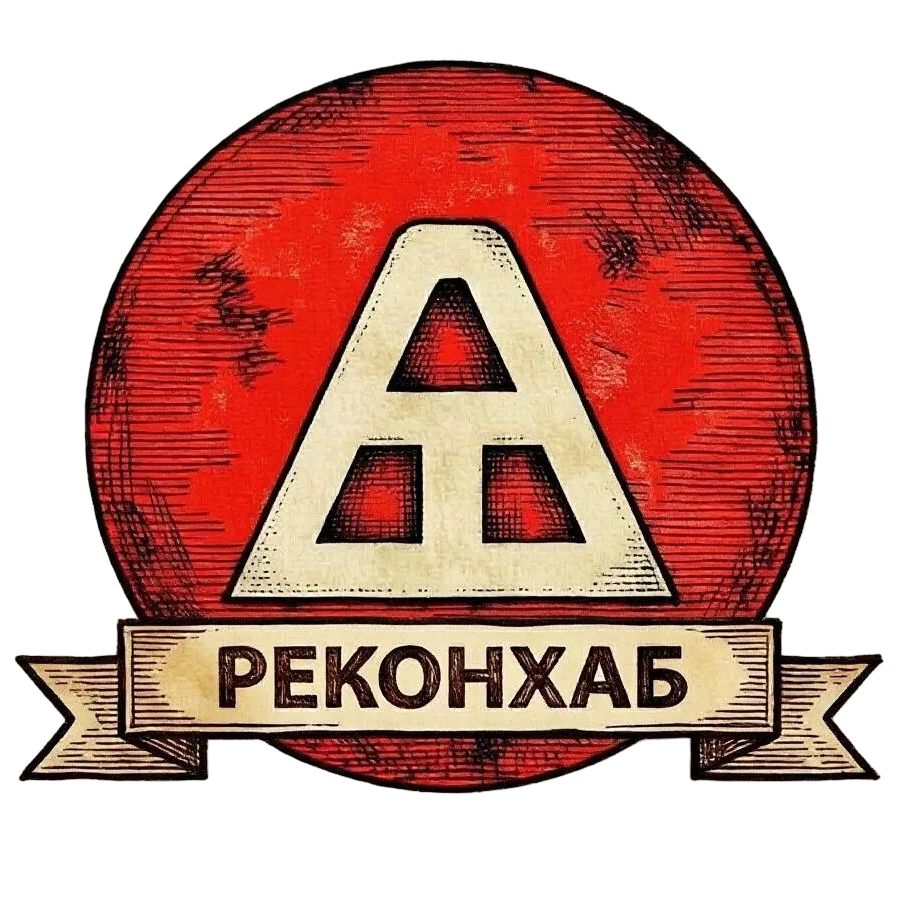

<!-- navigation-module.html - С колонками, без бургера, с крупным логотипом -->
<nav class="navigation-module" id="mainNavigation">
    <div class="nav-container">
        <!-- ЛОГОТИП -->
        <a href="index.html" class="nav-logo">
            
        </a>
        
        <!-- МЕНЮ - ТРИ КОЛОНКИ -->
        <div class="nav-menu" id="navMenu">
            <!-- Колонка 1: Главная + Клубы -->
            <div class="nav-column">
                <a href="index.html" class="nav-menu-item">
                    <span>📋</span>
                    <span>Главная</span>
                </a>
                <a href="clubs.html" class="nav-menu-item">
                    <span>🏛️</span>
                    <span>Клубы</span>
                </a>
            </div>
            <!-- Колонка 2: Мероприятия + Магазины -->
            <div class="nav-column">
                <a href="festivals.html" class="nav-menu-item">
                    <span>🎪</span>
                    <span>Мероприятия</span>
                </a>
                <a href="shops.html" class="nav-menu-item">
                    <span>🛒</span>
                    <span>Магазины</span>
                </a>
            </div>
            <!-- Колонка 3: Обратная связь + Донат -->
            <div class="nav-column">
                <a href="feedback.html" class="nav-menu-item feedback-btn">
                    <span>💬</span>
                    <span>Обратная связь</span>
                </a>
                <label for="donateToggle" class="donate-btn">
                    <span>❤️</span>
                    <span>Донат</span>
                </label>
            </div>
        </div>
    </div>
</nav>

<!-- ЧЕКБОКС ДОНАТА -->
<input type="checkbox" id="donateToggle" style="display:none;">

<!-- МОДАЛЬНОЕ ОКНО ДОНАТА -->
<div class="donate-modal">
    <div class="donate-modal-content">
        <label for="donateToggle" class="donate-close">&times;</label>
        <h3>Поддержать проект</h3>
        <p>Выберите удобный способ:</p>
        <div class="donate-options">
            <a href="https://vk.com/vsevolod_anadyrsky" target="_blank" class="donate-option">
                <span>💬</span> VK
            </a>
            <a href="https://sponsr.ru/reconhub/subscribe/" target="_blank" class="donate-option">
                <span>🤝</span> Sponsr
            </a>
        </div>
    </div>
</div>

<style>
    /* ============================================================
       НАВИГАЦИЯ — С КОЛОНКАМИ, БЕЗ БУРГЕРА, С КРУПНЫМ ЛОГОТИПОМ
       Логотип по высоте сопоставим двум строкам меню (~72px)
       ============================================================ */

    .navigation-module {
        position: fixed;
        top: 0;
        left: 0;
        right: 0;
        background: rgba(30, 20, 10, 0.95);
        border-bottom: 2px solid #d4a574;
        z-index: 999;
        padding: 10px 15px;
        box-shadow: 0 3px 15px rgba(0, 0, 0, 0.4);
        min-height: 84px; /* увеличено под крупный логотип */
        display: flex;
        align-items: center;
    }

    .nav-container {
        max-width: 1200px;
        margin: 0 auto;
        display: flex;
        justify-content: space-between;
        align-items: center;
        width: 100%;
        gap: 18px;
    }

    /* ============================================================
       ЛОГОТИП — КРУПНЫЙ, ПО ВЫСОТЕ КАК ДВЕ КНОПКИ МЕНЮ
       ============================================================ */

    .nav-logo {
        display: flex;
        align-items: center;
        justify-content: center;
        text-decoration: none;
        padding: 0;
        border-radius: 10px;
        background: transparent;
        border: none;
        transition: all 0.3s ease;
        flex-shrink: 0;
        height: 72px; /* высота ~ двум строкам меню */
        overflow: visible;
    }

    .nav-logo-img {
        height: 100%;
        width: auto;
        display: block;
        object-fit: contain;
        filter: drop-shadow(0 3px 6px rgba(0, 0, 0, 0.5));
        transition: transform 0.3s ease;
    }

    .nav-logo:hover .nav-logo-img {
        transform: scale(1.04);
    }

    .nav-logo:hover {
        background: rgba(230, 163, 54, 0.08);
    }

    /* ============================================================
       МЕНЮ - ТРИ КОЛОНКИ
       ============================================================ */

    .nav-menu {
        display: flex;
        flex-direction: row;
        gap: 12px;
        align-items: stretch;
        justify-content: flex-end;
        flex: 1;
    }

    .nav-column {
        display: flex;
        flex-direction: column;
        gap: 5px;
        align-items: stretch;
        justify-content: center;
    }

    .nav-menu-item {
        display: flex;
        align-items: center;
        gap: 6px;
        color: #f5ebd8;
        text-decoration: none;
        padding: 7px 14px;
        border-radius: 6px;
        transition: all 0.3s;
        font-weight: 400;
        font-size: 0.88rem;
        border: 1px solid transparent;
        background: rgba(255, 255, 255, 0.02);
        cursor: pointer;
        font-family: inherit;
        white-space: nowrap;
        justify-content: center;
    }
    .nav-menu-item:hover {
        background: rgba(230, 163, 54, 0.15);
        color: #ffcc66;
        border-color: #d4a574;
    }
    .nav-menu-item.active {
        background: linear-gradient(135deg, #e6a336, #d1891c);
        color: #333;
        border-color: #c17e1a;
        font-weight: 500;
    }
    .nav-menu-item span:first-child { font-size: 1.05rem; min-width: 22px; }

    .feedback-btn {
        background: linear-gradient(135deg, #e6a336, #d1891c);
        color: #333;
        border-color: #c17e1a;
        font-weight: 500;
    }
    .feedback-btn:hover {
        background: linear-gradient(135deg, #d1891c, #b8731a);
        color: #333;
    }

    .donate-btn {
        display: flex;
        align-items: center;
        gap: 6px;
        color: #ff8a8a;
        background: rgba(255, 50, 50, 0.12);
        border: 1px solid #ff6b6b;
        border-radius: 6px;
        padding: 7px 14px;
        font-weight: 400;
        font-size: 0.88rem;
        cursor: pointer;
        transition: all 0.3s;
        font-family: inherit;
        white-space: nowrap;
        justify-content: center;
    }
    .donate-btn span:first-child { font-size: 1.05rem; min-width: 22px; }
    .donate-btn:hover {
        background: rgba(255, 50, 50, 0.25);
        color: #ff4444;
        border-color: #ff4444;
    }

    /* ============================================================
       МОДАЛЬНОЕ ОКНО ДОНАТА
       ============================================================ */

    .donate-modal {
        display: none;
        position: fixed;
        z-index: 1000;
        left: 0;
        top: 0;
        width: 100%;
        height: 100%;
        background-color: rgba(0,0,0,0.7);
        backdrop-filter: blur(4px);
        align-items: center;
        justify-content: center;
    }
    #donateToggle:checked ~ .donate-modal {
        display: flex;
    }

    .donate-modal-content {
        background: #2a1f14;
        padding: 30px 35px;
        border: 2px solid #d4a574;
        border-radius: 16px;
        max-width: 400px;
        width: 90%;
        text-align: center;
        box-shadow: 0 10px 40px rgba(0,0,0,0.8);
        position: relative;
        animation: modalFadeIn 0.3s ease;
    }
    @keyframes modalFadeIn {
        from { opacity: 0; transform: scale(0.95) translateY(-20px); }
        to { opacity: 1; transform: scale(1) translateY(0); }
    }

    .donate-close {
        position: absolute;
        top: 10px;
        right: 18px;
        font-size: 28px;
        color: #bbb;
        cursor: pointer;
        transition: color 0.2s;
        line-height: 1;
        display: block;
    }
    .donate-close:hover { color: #fff; }

    .donate-modal-content h3 {
        color: #f5ebd8;
        font-size: 1.5rem;
        margin: 0 0 8px 0;
        font-weight: 600;
    }
    .donate-modal-content p {
        color: #ccc;
        font-size: 1rem;
        margin: 0 0 20px 0;
    }

    .donate-options {
        display: flex;
        justify-content: center;
        gap: 20px;
        flex-wrap: wrap;
    }
    .donate-option {
        display: flex;
        align-items: center;
        gap: 10px;
        padding: 12px 24px;
        background: rgba(230, 163, 54, 0.15);
        border: 1px solid #d4a574;
        border-radius: 10px;
        color: #f5ebd8;
        text-decoration: none;
        font-weight: 400;
        font-size: 1rem;
        transition: all 0.3s;
        min-width: 100px;
        justify-content: center;
    }
    .donate-option:hover {
        background: rgba(230, 163, 54, 0.3);
        border-color: #e6a336;
        transform: translateY(-2px);
        color: #ffcc66;
    }

    /* ============================================================
       АДАПТИВНОСТЬ
       ============================================================ */

    @media (max-width: 992px) {
        .navigation-module {
            padding: 8px 12px;
            min-height: 74px;
        }
        .nav-container { gap: 12px; }
        .nav-menu { gap: 8px; }
        .nav-menu-item, .donate-btn {
            font-size: 0.8rem;
            padding: 6px 11px;
        }
        .nav-menu-item span:first-child, .donate-btn span:first-child {
            font-size: 0.95rem;
            min-width: 20px;
        }
        .nav-logo { height: 62px; }
    }

    @media (max-width: 700px) {
        .navigation-module {
            padding: 6px 8px;
            min-height: 62px;
        }
        .nav-container { gap: 6px; }
        .nav-menu { gap: 5px; }
        .nav-column { gap: 3px; }
        .nav-menu-item, .donate-btn {
            font-size: 0.72rem;
            padding: 4px 9px;
            gap: 4px;
        }
        .nav-menu-item span:first-child, .donate-btn span:first-child {
            font-size: 0.85rem;
            min-width: 18px;
        }
        .nav-logo { height: 52px; }
    }

    @media (max-width: 430px) {
        .navigation-module {
            padding: 5px 6px;
            min-height: 52px;
        }
        .nav-menu { gap: 3px; }
        .nav-column { gap: 2px; }
        .nav-menu-item, .donate-btn {
            font-size: 0.62rem;
            padding: 3px 7px;
            gap: 2px;
            border-radius: 4px;
        }
        .nav-menu-item span:first-child, .donate-btn span:first-child {
            font-size: 0.75rem;
            min-width: 16px;
        }
        .nav-logo { height: 44px; }
        .donate-modal-content { padding: 20px; }
    }
</style>

<script>
    (function() {
        'use strict';

        // === ПОДСВЕТКА АКТИВНОЙ СТРАНИЦЫ ===
        var currentPage = window.location.pathname.split('/').pop() || 'index.html';
        if (currentPage.includes('?')) currentPage = currentPage.split('?')[0];
        if (currentPage.includes('#')) currentPage = currentPage.split('#')[0];
        
        var navItems = document.querySelectorAll('.nav-menu-item');
        for (var i = 0; i < navItems.length; i++) {
            var href = navItems[i].getAttribute('href');
            if (href === currentPage) {
                navItems[i].classList.add('active');
            }
        }

        // === МОДАЛКА ДОНАТА ===
        var modal = document.querySelector('.donate-modal');
        if (modal) {
            modal.addEventListener('click', function(e) {
                if (e.target === this) {
                    document.getElementById('donateToggle').checked = false;
                }
            });
        }

        // === ЗАКРЫТИЕ ДОНАТА ПО ESC ===
        document.addEventListener('keydown', function(e) {
            if (e.key === 'Escape') {
                document.getElementById('donateToggle').checked = false;
            }
        });

        console.log('✅ Навигация: три колонки, крупный логотип (72px), без бургера');
    })();
</script>
